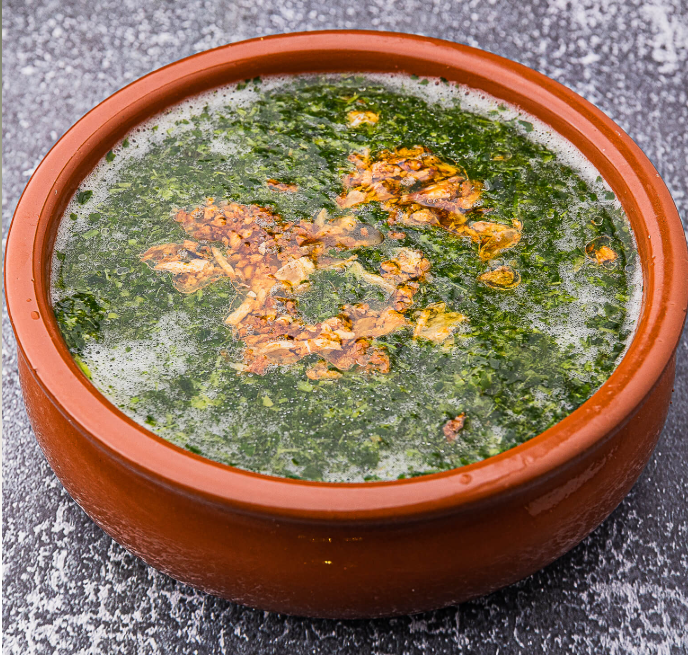

Macaroni Béchamel is the ultimate Egyptian soul food. It is a hearty, layered pasta bake that defines family gatherings and holiday feasts. Unlike Greek Pastitsio or Italian Lasagna, the Egyptian version is distinct for its thick, velvety blankets of sauce and deeply seasoned meat
Koshari is Egypt's most famous street food—a high-energy, flavorful carb-fest that brings together an unlikely mix of ingredients into a masterpiece of textures. It's affordable, and found on almost every street corner in Cairo.

While not a traditional Egyptian dish, Chicken Ranch Pizza has become a massive favorite in modern pizzerias across Egypt. It swaps the traditional red sauce for a creamy, zesty base, making it a "white pizza" that is rich, tangy, and incredibly satisfying.